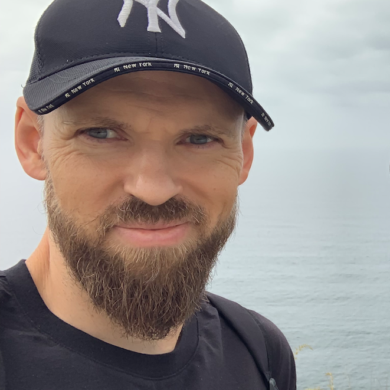

About Randobytes

Hi! My name is Barys, I'm the developer behind the games. My journey in game development began back in 1993, when my dad brought home a computer called "Byte" - a localized copy of the famous ZX Spectrum. That's when I first discovered programming in Basic and Assembler, saving my code to tape and dreaming up pixel worlds.
Randobytes is my indie game dev studio, a space where I can share some of those dreams with you. While I'm a solo developer, I also collaborate with talented freelancers for music, sound effects, voiceovers, and art. Their contributions are a huge part of what makes these games possible. And of course my family's support means everything to me - they've been with me every step of the way.
Thanks for stopping by - I hope you'll enjoy what Randobytes has to offer!